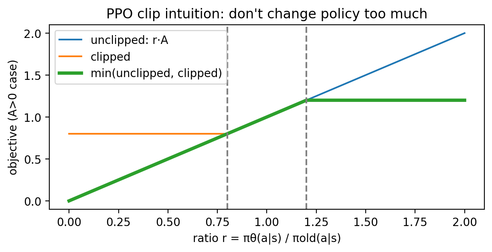

05 · PPO：现代常用 RL 算法之一（直觉 + 原理）¶
这一章目标：你能解释清楚：策略梯度在优化什么、为什么会不稳定、PPO 的 clip 在限制什么。
核心概念: Actor-Critic, Clip, Advantage 图解:
figures/05_ppo_clip.png代码:code/ppo/
0. PPO 为什么稳：限制策略更新幅度¶

flowchart LR
old[旧策略 π_old] -->|采样轨迹 | data["(s,a,logp_old,adv)"]
new[新策略 π_θ] -->|计算 logp| ratio["r = π_θ(a|s)/π_old(a|s)"]
data --> ratio
ratio --> clip[clip 到 1±ε]
clip --> obj[最大化裁剪目标]
obj --> update[更新 θ]1. 生动案例：教客服机器人更会"说话"¶
你训练一个对话机器人（策略）： - 它说一句话（动作） - 用户满意度（奖励）可能在对话结束才体现
你想让它更倾向输出"高满意度"的回答。
这非常像：
- 策略 π 输出一个动作分布
- 采样动作
- 用回报信号调整参数
2. 策略梯度到底在做什么¶
策略是参数化的：π_θ(a|s)
目标：最大化期望回报
策略梯度的直觉：
最朴素的形式（REINFORCE）：
3. Advantage：让学习更稳定、更低方差¶
直接用回报 G 的问题：噪声大
于是我们用优势函数：
| A 值 | 含义 | 更新方向 |
|---|---|---|
| A > 0 | 这个动作比平均好 | 增加概率 ↑ |
| A < 0 | 这个动作比平均差 | 减少概率 ↓ |
| A = 0 | 和平均一样 | 不变 |
Actor-Critic 里：
- Critic 学 V(s)
- Actor 用 A 来更新
4. 为什么策略梯度会"跑飞"¶
问题链条：
所以现代算法都在控制"步子不要迈太大"。
5. PPO 的关键：限制新旧策略差异¶
Clipped Objective（裁剪目标）¶
计算概率比值：
裁剪：
直觉：
你可以提高好动作的概率，但别一下子提高太多； 你可以降低坏动作的概率，但也别一下子降低太多。
| ε 值 | 效果 |
|---|---|
| ε = 0.05 | 更新很保守，学得慢 |
| ε = 0.2 | 平衡（推荐） |
| ε = 0.4 | 更新激进，可能不稳定 |
6. PPO 训练时通常还会加什么¶
| 技巧 | 作用 |
|---|---|
| Entropy bonus | 鼓励策略别太快变得确定（帮助探索） |
| Value loss | 训练 Critic 的 V(s) |
| Normalization | 对优势做标准化（减均值/除标准差） |
| GAE | Generalized Advantage Estimation，更稳的优势估计 |
7. 本仓库的最小 PPO（可读性优先）¶
我们用离散 gridworld：
| 组件 | 实现 |
|---|---|
| Actor | 输出 4 个动作概率 |
| Critic | 输出 V(s) |
| 优势 | 用"回报 - V(s)"简化（并标准化） |
文件：code/ppo/train_ppo_grid.py
运行：
你应该看到：
Episode 100: avg_return = -1.5, entropy = 1.38
Episode 200: avg_return = -0.8, entropy = 1.25
Episode 300: avg_return = -0.2, entropy = 1.10
...
8. 小练习¶
-
调整 clip_eps：把
clip_eps从0.2改成0.05或0.4，稳定性如何变化？ -
去掉 entropy bonus：会发生什么？
-
提示：更快变得确定，可能更早陷入局部最优
-
连续动作：把环境改成连续动作（需要换分布：Normal），思路会怎么改？
-
提示：Actor 输出 μ 和 σ，从 N(μ,σ²) 采样
-
实现 GAE：用多步优势估计替代单步优势
- 提示：参考 Schulman 2015 的 GAE 论文
9. 进一步阅读¶
| 资源 | 说明 |
|---|---|
| PPO 原论文 | Proximal Policy Optimization |
| TRPO | PPO 的前身 |
| GAE 论文 | Generalized Advantage Estimation |
| CleanRL PPO | 精简实现参考 |
下一章：06 · 离线 RL 与评估